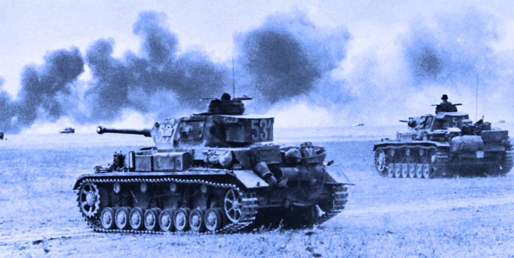

1 / 3

Welcome to TankersTank
2 / 3

Learn about tanks old and new
3 / 3

A tank is an armoured fighting vehicle intended as a primary offensive weapon in front-line ground combat.
Tank designs are a balance of heavy firepower, strong armour, and good battlefield mobility provided by tracks and a powerful engine; usually their main armament
is mounted in a turret. They are a mainstay of modern 20th and 21st century ground forces and a key part of combined arms combat.
The first concept of a tank is from Leonardo Da Vinci. And the first tank to be used in
warfare is the British Mark I, it's first used in September of 1916 to fight in the trenches of WW1.
Before long, one british tank got captured by the
Germans and renamed to the Beutepanzerwagen IV. Using the captured tank as a reference, the
Germans created the PzKpfw Panther and Tiger, which is largely superior to the Alliance's
Due to the Axis's apparent superiority over the Alliance, they were forced to keep up.
Creating tanks such as the Curchill tank, Cromwell tank, M4 Sherman, etc.